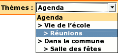

Dans EVA il existe deux types d'agendas :
1. Un agenda du type calendrier, que l'on nommera calendrier :
2. Un agenda plus simple, que l'on nommera agenda :
Un agenda est en fait une rubrique à laquelle on attache le mot-clé "agenda" ou "calendrier" suivant le type d'agenda que l'on souhaite.
Remarque : hormis le mot-clé rattaché et la manière dont ils sont affichés, les deux types d'agenda se comporteront exactement de la même manière.
Les événements de l'agenda sont les articles de cette rubrique. Seulement, pour qu'un article apparaisse dans l'agenda, il faut indiquer une date de publication antérieure.
La date de publication en ligne est la date à partir de laquelle l'article (l'événement) apparait sur le site, notamment sur la page d'accueil (dans les derniers articles).
La date de publication antérieure est la date à laquelle l'événement (l'article) fait référence. Dans l'agenda, l'article apparaitra dans la case du jour (du mois et de l'année) correspondant.
Pour pouvoir utiliser les dates de publication antérieures sur les articles, il faut les activer dans l'interface de SPIP. Allez dans : Administration du site > Configuration > Contenu du site > Les articles
Puis cochez "oui" pour "Date de publication antérieure", enfin cliquez sur [Valider].
Pour mettre une date de publication antérieure à un article, allez sur la page d'édition de l'article, en dessous de la date de publication en ligne, développez la flèche, cochez "Afficher ...", puis renseignez votre date :
Ici, l'article à été publié le 29 juin 2005, mais l'événement auquel il faisait référence aura lieu le 1er juillet 2005.
L'article est "apparu" le 29 juin 2005 sur la page d'accueil, mais dans l'agenda il apparaitra comme étant un événement daté au 1er juillet 2005
Dans les (deux types) agendas qui correspondent donc à des rubriques, on peut avoir plusieurs sous-rubriques contenant elles mêmes des articles. Ces sous-rubriques seront les "thèmes" de l'agenda.
Chaque événement de l'agenda (chaque article en fait), devra donc être classé dans le bon "thème" (la bonne sous-rubrique).
Ensuite côté visiteur, si on va dans l'agenda (rubrique de départ) on verra tous les articles (événements) de cette rubrique, ainsi que ceux des thèmes (sous-rubriques). Plus on descendra dans l'arborescence (sous-rubriques), plus on "restreindra" les événements affichés : l'agenda affichera toujours les articles de la rubrique courante et ceux des sous-rubriques.
Exemple :

Si l'on descend dans le thème "Vie de l'école", on ne verra plus que les événements du thème "Vie de l'école" et du sous-thème "Réunions" ; les événements des autres thèmes ne seront plus visibles.
Si vous utilisez plusieurs thèmes, il est recommandé de personnaliser le logo de chaque thème. Il sera plus facile pour les utilisateurs de lire cet agenda, et voir pour chaque événement à quel thème il fait référence.
Le logo "de base" d'un agenda est celui ci :
Enfin si vous souhaitez faire apparaître dans la barre des boutons celui de votre rubrique agenda, il suffit de lui ajouter le mot-clé "bouton" en plus de "agenda", comme décrit dans : Boutons du menu